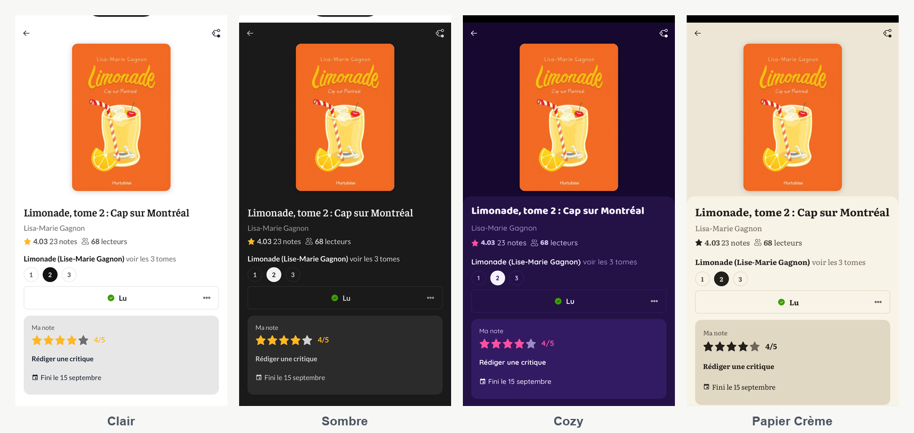
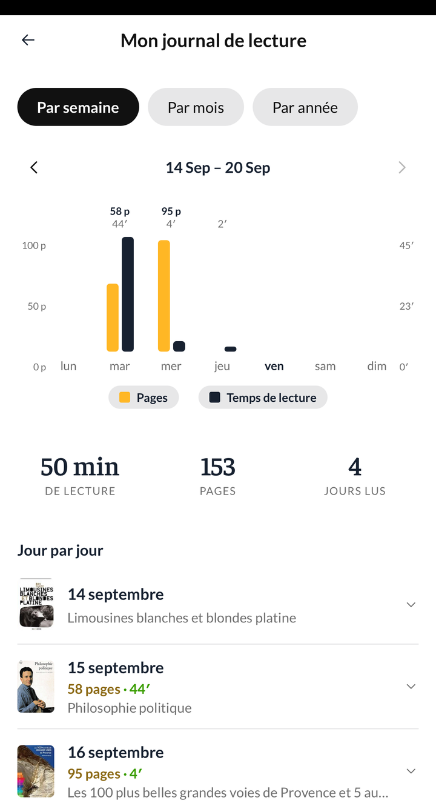
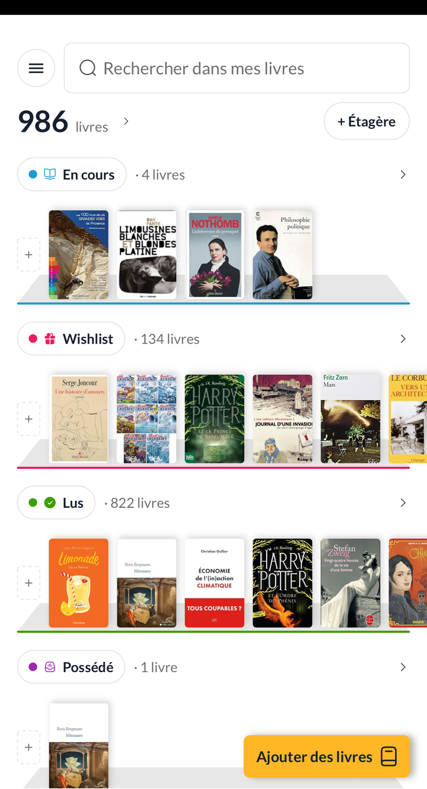
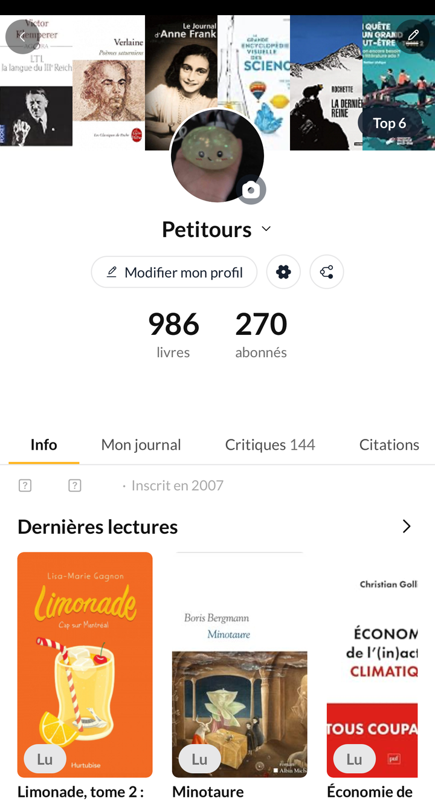
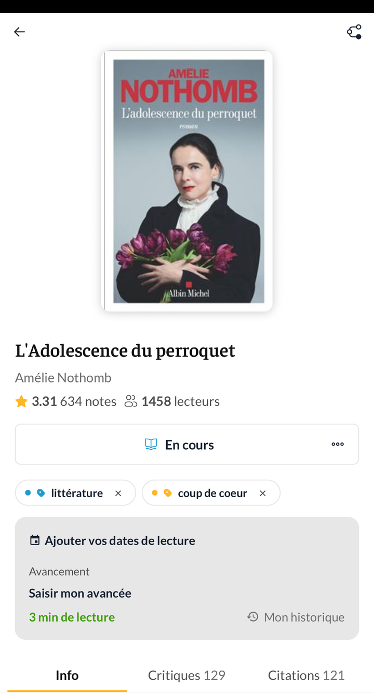
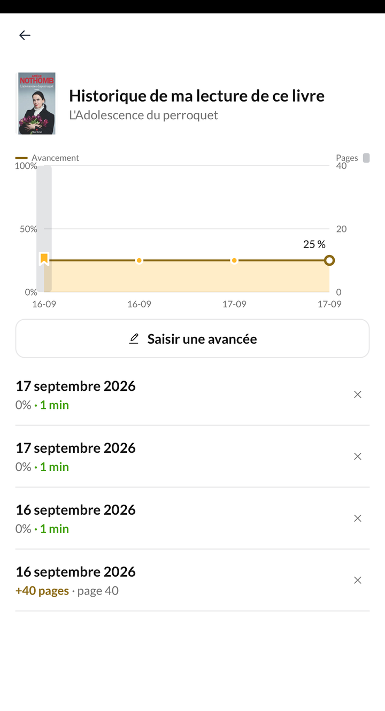
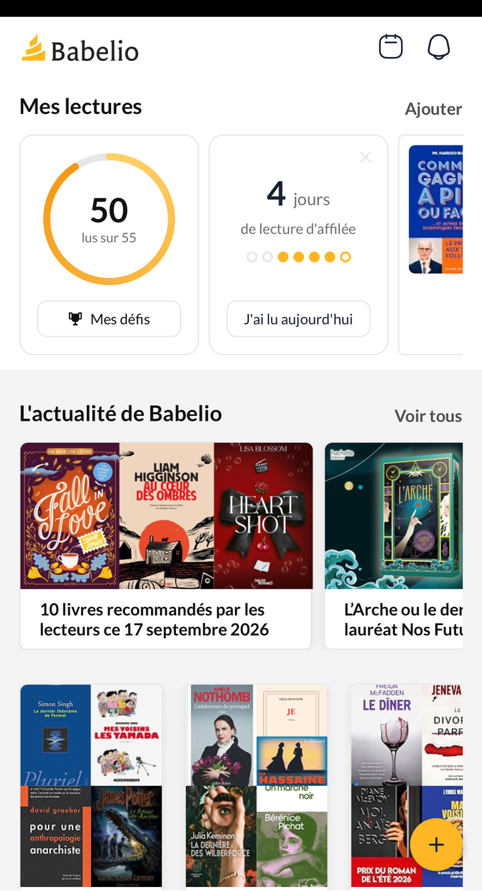
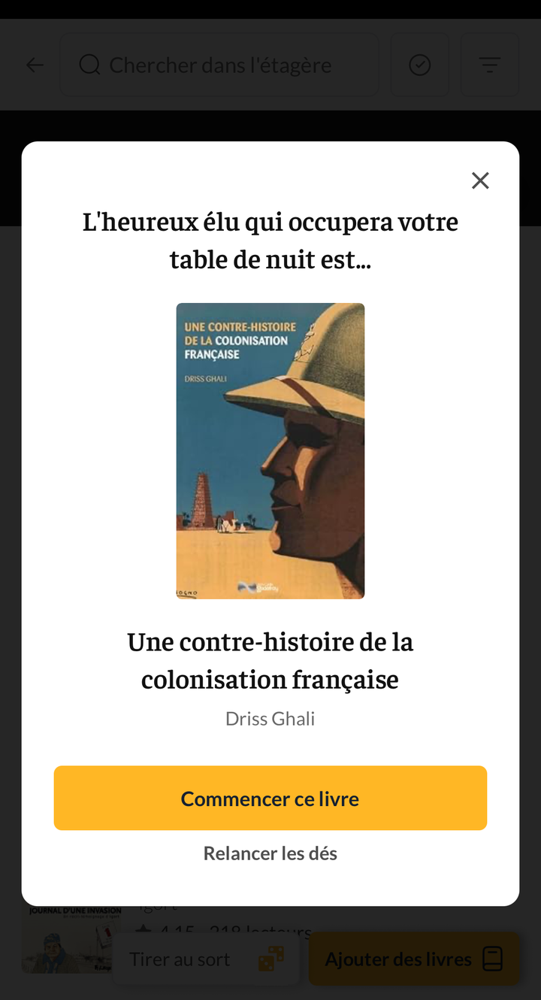

Ce qui change dans l'application, version par version.
Version 0.206.0 · android et ios
Nouveautés
Quatre thèmes au choix

Clair, sombre, Cozy et Papier Crème. Le mode se change dans Réglages › Modes clair, sombre, cozy, et l'application entière suit — les couvertures, les graphiques et jusqu'aux polices de caractères.
Votre journal réunit le calendrier et les statistiques

Profil › Mon journal rassemble ce qui vivait à deux endroits. Trois échelles : par semaine pour voir vos pages et vos minutes jour après jour, par mois pour retrouver les livres refermés, par année pour la vue d'ensemble.
Sous le graphique de la semaine, chaque journée s'ouvre sur le détail de ses sessions.
Le tirage au sort, sur toutes vos étagères
Le dé ne fonctionnait que sur « À lire » et la wishlist. Il fonctionne maintenant sur n'importe quelle étagère, y compris celles que vous créez.
> Les captures illustrant les versions de mai à juillet ont été prises dans > l'application telle qu'elle est aujourd'hui : l'écran a pu évoluer depuis la > version où la fonctionnalité est apparue.
Corrections
Les dates de lecture s'inscrivent de nouveau seules. Passer un livre à « Lu » ou « En cours » pose la date correspondante, quel que soit l'endroit d'où vous le faites : la fiche du livre, le scanner, le chronomètre, une sélection multiple. Le réglage se trouve dans Réglages › Date et statut de lecture automatique.
Une session mal saisie se supprime. La croix était présente mais presque invisible ; elle se voit désormais dans l'historique du livre et dans le journal.
La série de lecture s'ouvre au toucher sur toute la carte, même lorsqu'aucune série n'est en cours.
L'écran des statistiques d'une année s'affiche en une seconde et demie au lieu de huit.
Version 0.206.0 · android et ios
Corrections
Le temps de lecture s'affiche sous la jauge de la fiche livre, y compris sur un livre déjà terminé.
La croix supprime une date de lecture, et le retour Android ne l'efface plus tout seul.
Le clavier ne masque plus les champs dans « Noter mon avancée » — ni dans les défis, le signalement d'un problème ou la création d'une liste.
Les livres en envie de lecture apparaissent dans vos étagères personnelles.
Terminer un livre fait compter la journée dans votre journal.
Version 0.206.0 · android et ios
Corrections
Les photos jointes aux commentaires partent, quelle que soit leur taille.
Écran « à partir de quel âge » : plus besoin de bouger la liste entre deux réponses.
Un nombre de pages manquant se complète directement, sans passer par la modération.
Signaler une erreur transmet l'édition exacte à corriger.
Version 0.206.0 · android et ios
Nouveautés
Chronométrez vos sessions de lecture
Lancez le chronomètre depuis le livre que vous avez en cours. La durée se pré-remplit ensuite dans votre avancée, et vos lectures de la semaine apparaissent en graphiques.
Corrections
Les listes ont des fils de discussion, comme les critiques.
Signaler une erreur pointe vers la bonne édition.
Votre top 6 se choisit même sur une année sans lecture.
Écran « à partir de quel âge » : la saisie répond.
Version 0.206.0 · android et ios
Nouveautés
Les commentaires deviennent des fils de discussion
Répondez à un commentaire — et aux réponses. Aimez-en un, joignez-y des photos. Sur les critiques comme sur les citations.
Corrections
Un livre passé en « lu » ne quitte plus vos livres possédés.
Le nombre de pages que vous corrigez est enregistré.
Le clavier ne masque plus la saisie d'un commentaire.
Version 0.206.0 · android et ios
Nouveautés
Partagez votre profil en image
Un bouton à côté des réglages fabrique une image de votre profil, prête à partager.
Un calendrier de lecture mensuel, partageable lui aussi
Des widgets revus, sur iOS comme sur Android
Corrections
Dates de lecture, étagères, statut « Possédé » depuis le scanner, reconnaissance de texte, comptage des pages — et divers retours que vous nous avez envoyés.
Version 0.205.1 · android et ios
Nouveautés
Partagez n'importe quelle étagère
En image ou par un lien web, comme vous partagez déjà vos listes. Les listes, elles, acceptent maintenant qu'on y ajoute les livres d'une étagère entière.
La recherche se range par rubriques
Les résultats sont groupés par type, et votre requête se corrige sur place sans avoir à tout retaper.
Après avoir publié une critique
L'application vous propose de la partager, avec une image aux couleurs de Babelio.
Version 0.204.2 · android et ios
Nouveautés
Agir sur plusieurs livres à la fois
La sélection multiple se trouve depuis l'en-tête de « Mes livres », et permet de ranger, déplacer ou classer plusieurs livres d'un coup.
Signaler une erreur sur une fiche
Le signalement crée directement un ticket auprès de notre équipe, avec l'édition concernée.
Corrections
Vos étagères gardent la même couleur d'un écran à l'autre.
Le scanner confirme l'ajout d'un livre par une vibration.
Retoucher l'onglet « Mes livres » remonte la liste en haut.
Version 0.204.1 · android et ios
Nouveautés
Des premiers pas guidés
Un parcours en neuf étapes accueille les nouveaux lecteurs et les aide à remplir leur bibliothèque.
Vos étagères, réunies

Un tiroir « Mes étagères » rassemble les vôtres, et la création d'une nouvelle étagère tient en un écran. « Mes livres » propose un affichage compact.
Le calendrier des sorties
L'ancienne section « À paraître » devient un calendrier que l'on parcourt mois par mois.
Avertissements de contenu
Signalez et consultez les avertissements sur une œuvre, avec une nouvelle catégorie et la possibilité de commenter.
Votre Top 6 sur le profil

Six livres mis en avant en haut de votre profil.
Version 0.204.0 · android et ios
Nouveautés
La zone « Ma lecture » sur chaque fiche livre

Où vous en êtes, ce que vous avez lu, et l'historique de vos avancées sur ce livre.

Votre série de lecture

Les jours où vous lisez s'enchaînent et se comptent, depuis l'accueil.
Les statistiques refondues
Votre année en un coup d'œil, avec un histogramme par mois.
Version 0.203.0 · android et ios
Nouveautés
Deux comptes Babelio côte à côte
Passez de l'un à l'autre d'un seul geste, sans vous déconnecter.
L'accueil revu
Les cartes « Mes lectures » et la zone de découverte ont été redessinées.
Version 0.202.0 · android et ios
Nouveautés
Soyez prévenu des nouveautés
Abonnez-vous aux parutions d'un auteur ou d'une série depuis sa page.
Vos réglages de notifications et de confidentialité
Deux écrans dédiés : ce que vous recevez, et qui peut interagir avec vous. Vous pouvez aussi bloquer un membre depuis son profil.
Vos livres en commun
Sur le profil d'un autre lecteur, les livres que vous avez lus tous les deux.
Version 0.201.0 · android et ios
Nouveautés
Tirez votre prochaine lecture au sort

Un dé sur votre pile à lire et votre wishlist choisit pour vous, quand vous n'arrivez pas à vous décider.
Un statut par défaut pour les livres ajoutés
Choisissez dans les réglages ce que devient un livre quand vous l'ajoutez depuis sa page.
Corrections
L'application ne vous déconnecte plus quand le réseau se coupe.
Le champ de commentaire s'agrandit à mesure que vous écrivez.